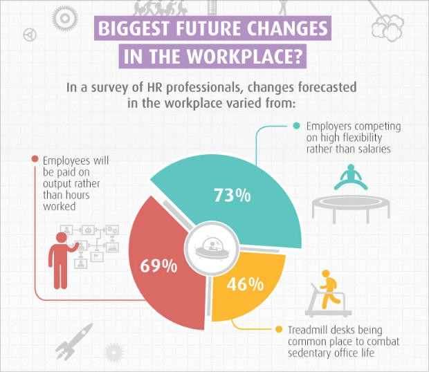

Nowadays, people rely on pictures, visualized information very much.
However, we should always be critical and awareness in order to avoid misleading information.
The Y-axis number in the left picture is from 3.140% as a starting point, and is adjusted by every 0.002%.
This showed that the interest rate is climbing so fast. However, the Y-axis in the right one starts from 0 and increases upwards by 0.5%.
In this way, the annual interest rate looks stable.
If the sum of the pie charts is not 100, the pie chart cannot be considered as a whole.
When the scale of the pie chart is problematic then the information would be misleading.
This figure is a survey of people's opinion on the future career, there are three options, but how to interpret them into 73%, 69%, 46%?
This is actually a very odd result. The pie chart is not completed. The sum of the three numbers is not equal to 100%. It is meaningless to compare the numbers with each other.